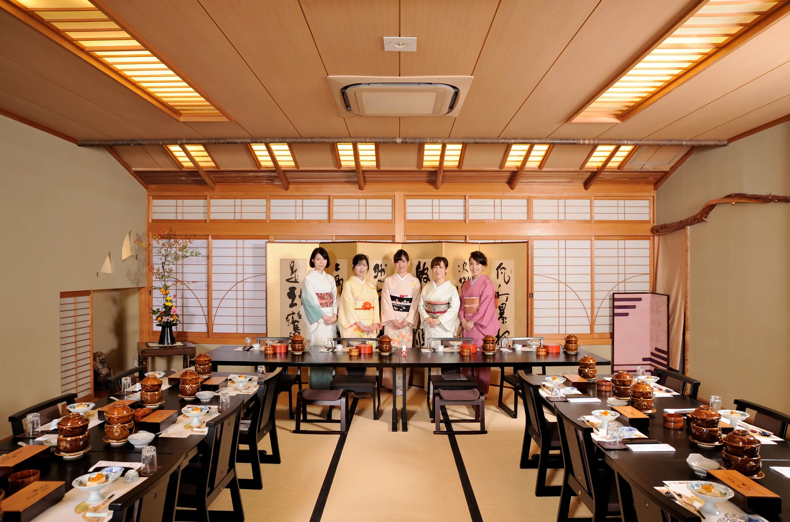

はな亭

日本料理の伝統を受け継ぎながら、今治を代表する
お店として、私たちは料理を通じて人々に
感動や喜びを届けることを大切にしています。
お店の雰囲気や料理の印象は、直接感じることで
初めて理解できます。
もし料理に情熱を抱き、お客様に最高の体験を提供
したいと考える方がいらっしゃれば
ぜひ一度、当店を訪れてみてください。
書類や口頭での説明だけでは伝わりきらない、
独自の魅力や技術をぜひご自身で確かめてみてください。
一緒に素晴らしい食の世界を築いていけることを
楽しみにしています。
日本料理の伝統を受け継ぎながら、今治を代表するお店として、
私たちは料理を通じて人々に感動や喜びを届けることを大切にしています。
もし料理に情熱を抱き、お客様に最高の体験を提供したいと
考える方がいらっしゃれば
ぜひ一度、当店を訪れてみてください。
お店の雰囲気や料理の印象は、直接感じることで初めて理解できます。
書類や口頭での説明だけでは伝わりきらない、独自の魅力や技術を
ぜひご自身で確かめてみてください。
一緒に素晴らしい食の世界を築いていけることを楽しみにしています。
『志のある料理人』『明るいサービス係』
募集中